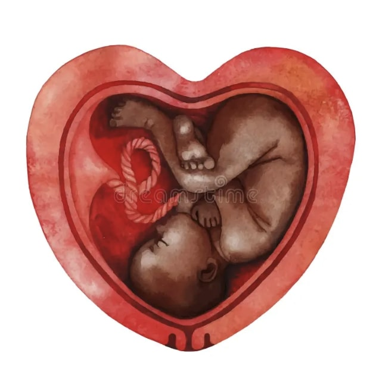
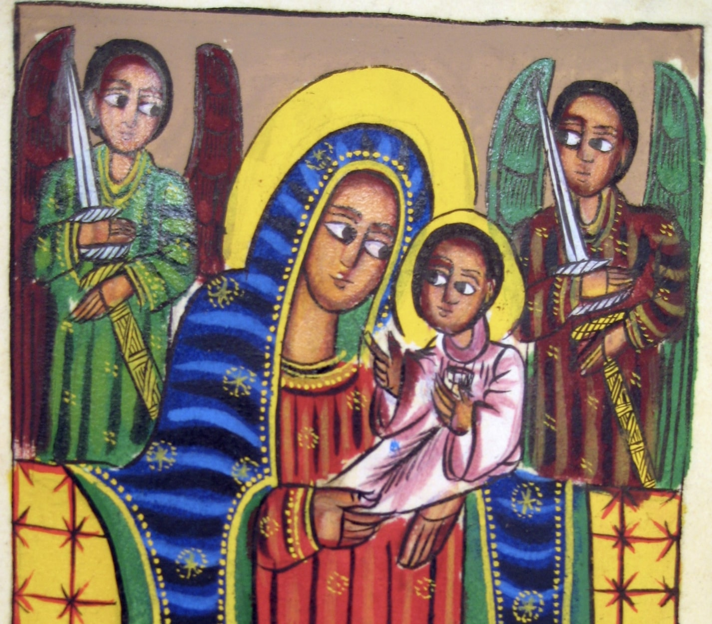

Cultural Practices and Spirituality
Braided Sandals to Braided Time: Life’s Weave

Womb Shame vs. Accepting, Loving, and Respecting
Coded Communication: The Taboos of Saying ‘Bye’ and ‘Thank You’ in Amharic
BHands Out to the Sun:

Religion Shaped by Culture or Culture Shaped by Religion? Unraveling the Ethiopian Orthodox Church’s Influence